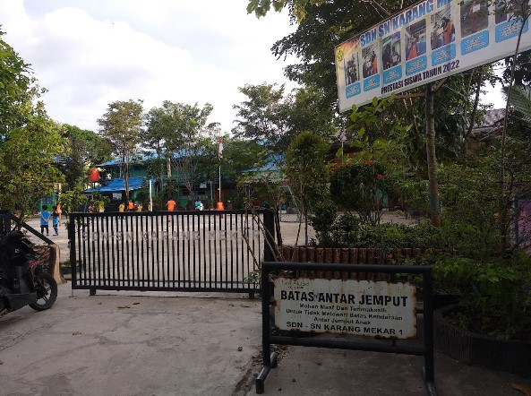
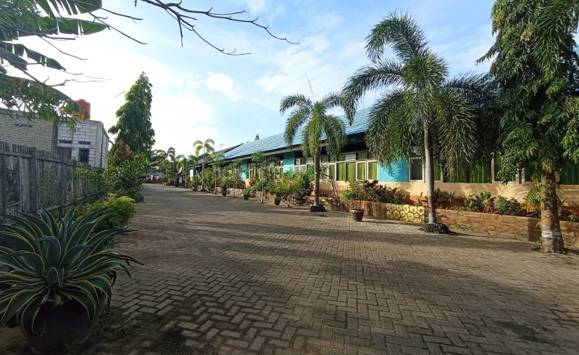
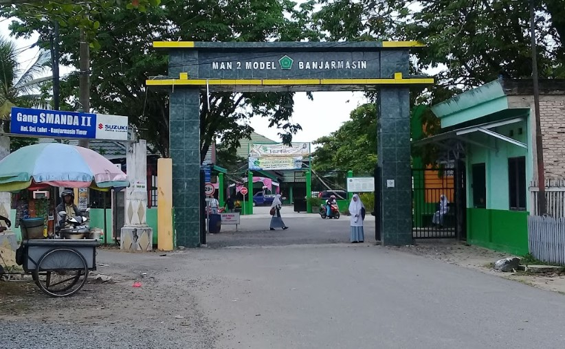
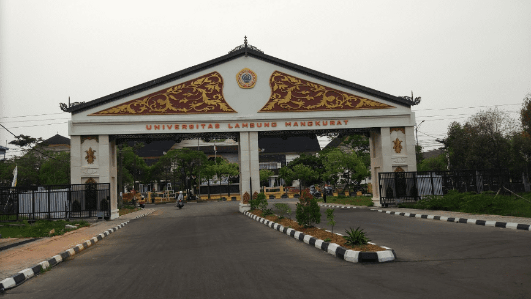
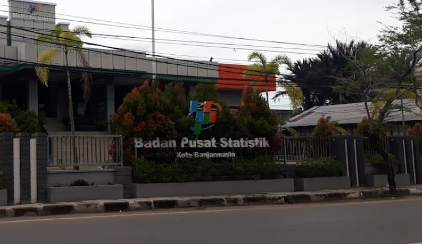

Pendidikan
SDN-SN Karang Mekar 1 Banjarmasin (2011-2017)

SDN-SN Karang Mekar 1 merupakan sekolah dasar negeri dengan standar nasional.
Saya memilih sekolah ini karena jaraknya lumayan dekat dengan rumah kakek pada masa itu.
Fakta menarik dari sekolah ini adalah tempatnya berdampingan dengan satu sekolah dasar negeri lain yaitu SDN Karang Mekar 5.
Dikarenakan tempatnya yang berdapmpingan maka kedua sekolah tersebut memiliki 1 lapangan yang sama.
Dan setiap upacara bendera hari senin siswa dari kedua sekolah digabung dalam satu upacara bendera yang sama.
Sekolah ini juga memiliki fasilitas yang menurut saya sangat unik. Fasilitas tersebut adalah Keran Air Siap Minum.
Ya, kita dapat langsung meminum air yang keluar dari keran, sangat menarik.
SMPN 30 Banjarmasin (2017-2020)

SMP Negeri 30 Banjarmasin adalah salah satu sekolah menengah pertama yang berlokasi di dekat perumahan dan jauh dari jalan raya.
Sekolah ini berakreditasi A. Saya terpilih di sekolah ini karena kebetulan pada saat mendaftar ke sekolah favorit, saya tidak berhasil lolos karena sistem zonasi.
Saya merasa sangat sedih pada waktu itu karena harus terpisah dengan kawan saya dari SD yang juga mendaftar pada sekolah favorit yang sama.
Namun karena hal itu, saya mendapat banyak kawan baru dan banyak relasi baru.
Pada saat masa SMP, saya pernah mengikuti lomba Olimpiade Sains tingkat kota mewakili sekolah.
MAN 2 Kota Banjarmasin (2020-2023)

MAN 2 Kota Banjarmasin adalah madrasah aliyah negeri yang cukup terkenal di daerah saya.
Sekolah ini cukup banyak menghasilkan siswa-siswi berprestasi dari berbagai bidang di setiap tahunnya.
Pertama kali saya memasuki sekolah ini, saya cukup takut merasa culture shock karena sebelumnya saya tidak pernah menempuh pendidikan di sekolah agama.
Namun, lama kelamaan saya terbiasa dengannya dan selama di sekolah ini saya cukup banyak belajar tentang agama. Pergaulannya pun membuat saya menjadi pribadi yang lebih dekat dengan Tuhan.
Cukup banyak kenangan yang saya dapat dari madrasah ini, mengingat masa putih abu-abu adalah masa-masa yang paling indah dan tidak akan pernah saya lupakan seumur hidup.
Universitas Lambung Mangkurat (2023-sekarang)

Universitas Lambung Mangkurat adalah perguruan tinggi paling terkenal se-Kalimantan.
Perguruan tinggi yang biasa disingkat dengan ULM ini merupakan salah satu universitas paling bergengsi yang ada di Indonesia.
Pada saat itu, saya mendaftar melalui jalur SNBP. Awalnya saya tidak terlalu yakin bahwa saya akan lulus.
Namun ternyata saya bisa lulus dengan jalur tersebut. Saya sangat bahagia ketika mengetahuinya.
Padahal sebelumnya saya sudah bersiap-siap belajar untuk jalur SNBT. Sekarang saya telah menempuh semester 2 disini.
Semoga saja kedepannya, saya bisa lulus tepat waktu dan menjadi sarjana dengan nilai terbaik.
Pengalaman

Saya pernah mengikuti Praktik Kerja Lapangan (PKL) atau biasa disebut magang pada saat masih duduk di bangku madrasah aliyah.
Saya melaksanakan magang di Badan Pusat Statistik Kota Banjarmasin dengan posisi saya adalah sebagai desainer grafis.
Tugas saya adalah mendesain cover untuk buku Indeks Pembangunan Manusia.
Selama satu bulan magang, saya mendapat begitu banyak pengalaman dan sedikit gambaran tentang dunia kerja.
Warga kantornya pun sangat ramah.
Selain itu, saya diberikan fasilitas seperti komputer dengan spesifikasi yang mumpuni yang sangat memudahkan saya untuk melakukan pekerjaan.